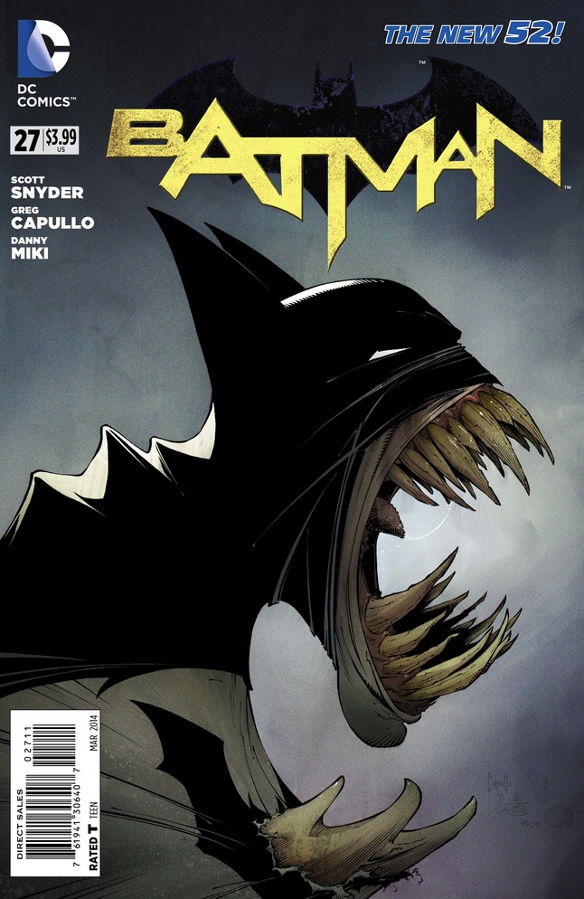
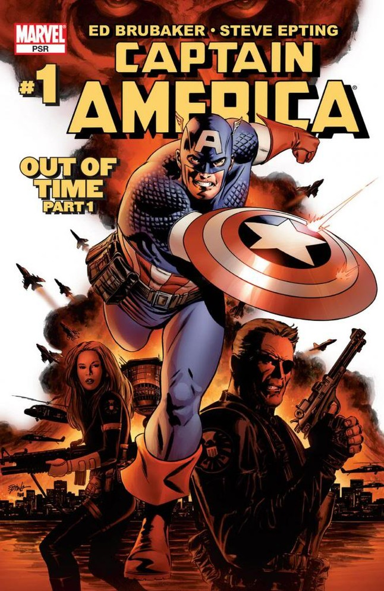
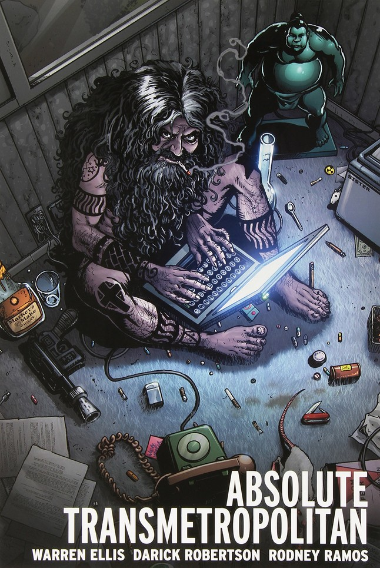
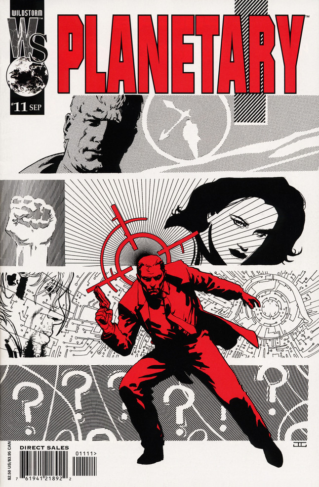

CAMA COMICS
GALLERY
TOP
While the New 52 as a whole was an experiment that not many would call a success (It’s okay, DC Rebirth fixed it), there was one comic that just kept kicking butt up and down Gotham City: Batman by Scott Snyder and Greg Capullo. The series got back to basics with Batman while at the same time deeply changing and evolving the mythology of Gotham as a character all its own. It reintroduced the Joker as a much more dangerous psychopath than we’d seen in years, but also told personal stories of family, fathers and sons, and whether Bruce Wayne could ever be whole again.
While, for the most part, we avoided limited series (unless they got into the several tens of issues), we took exception for All-Star Superman, a brilliant magnum opus by Grant Morrison and Frank Quitely about what Superman does on a cosmic level and a personal one. With looks deep into the heart of everyday people affected by Superman, Superman himself, Lois, and even Lex Luthor, we reach a better understanding of how Superman sprung from a public consciousness that just needs a hero. If you can read this story and not fall in love with the character, well, you’re probably hellbent on taking over the world.
 Ed Brubaker came into Marvel with a cadre of artists like Steve Epting, Michael Lark, and Mike Perkins (and more) and had the story to relaunch and revive Captain America: Do the unthinkable, and bring back Bucky Barnes. Bucky, along with Peter Parker’s Uncle Ben, was largely considered the only completely untouchable deaths in comics, but Brubaker pulled it off, and with flair. Heard of The Winter Soldier? Civil War? The Death of Captain America (and Bucky taking up the shield)? That’s all from this one run of comics. It inspired a couple pretty awesome movies, too.
Joss Whedon’s legend was already secure when Marvel Comics courted him to essentially take over the X-Men after Grant Morrison’s seminal run, but what he did in his time with John Cassaday was spectacular. They sought to re-establish the X-Men as full-on superheroes, and they did, but not without giving them a whole heck of a lot of drama along the way. Colossus’s return, running through a stunned, phased Kitty Pryde to protect her from gunfire as his first act, was one of the best single moments in superhero comics in the last 25 years, too.
The Marvel Knights era of Daredevil was such a drastic switch up and revitalization of the character, we have to include it. Kevin Smith and now Marvel CCO Joe Quesada relaunched the character under the Marvel Knights imprint, bringing old hornhead back to the streets in stories that featured religion, drugs, murder, suicide; a lot of things that superhero comics didn’t touch very often (especially in the ‘90s). When David Mack brought Brian Michael Bendis on board as his co-writer, Bendis would segue that into an epic run of his own on the series, teamed with artist Alex Maleev in giving readers the most noir and personal look they'd seen at Daredevil since Born Again. The modern Daredevil TV series owes a lot to that run, as does Marvel-Netflix as a whole.
In 2000, Marvel Comics wasn’t doing very well. Bill Jemas had the idea to give Marvel a boost of the new and take it into the 21st century. Ultimate Spider-Man started it all, as Brian Michael Bendis and Mark Bagley were tasked with starting over – give Peter Parker a life starting back in high school, age in real time or slower, and wipe away all the existing continuity of the previous forty years. It worked, and helped bring Marvel back from the brink in a major way. More than telling modern stories of Peter Parker, it told much slower, more deliberate, and personal stories. Everything that happened in the series was looked at directly in how it affected Peter and his friends and family. Later, it would also give way to the fan-favorite Miles Morales, the second Spider-Man now in the main Marvel Universe.
After bringing Hal Jordan back from the dead, Geoff Johns and Carlos Pacheco set out to make the Green Lanterns the very center of the DC Universe. The new volume of the ongoing series so drastically changed the DCU, it’s safe to say we wouldn’t see any comics published today from DC Comics the same way without it. It was here that Johns introduced the ideas of the emotional spectrum and more Corps of lanterns that could harness other emotions. It could very easily be argued that this storyline moved Johns into the level of prominence that now has him as Chief Creative Officer and President at DC Entertainment, and co-head of DC Films, so this one is as far-reaching as they come. It also happens to be damn good comics.
Another Mark Millar creator-owned joint, this one hit big with both comic readers and movie-goers. The comic gave us a new look at people becoming vigilante superheroes in a world that’s otherwise very much like ours. The real reason this made the list, though, is Hit-Girl, the youngest vigilante, who also happens to be an incredible trained killer. She became a star on her own, both in the films and comics (and her own spin-off). Wait, should we retitle this entry?
Brian Azzarello and Eduardo Risso crafted an epic with a simple premise of revenge fantasy, which turned into an epic that twisted and turned through one of the best straight-up crime and conspiracy stories that comics have ever told. It was violent, turned completely on its head more than once, and had an honest look at morality and the consequences of every decision that still has us pondering.
Marvel Comics editor Sana Amanat grew up without superheroes that looked like her and didn’t want that to happen to others. Teaming with G. Willow Wilson and Adrian Alphona, they created a new Inhuman character named Kamala Khan, who would become the new Ms. Marvel. She became the first Muslim character to headline a Marvel comic, and offered up a look at teenage life as a Muslim in America that had never been seen in comics. Her enthusiasm and optimism in the face of troubles teenaged, religious, and supervillain is inspirational. She has been often referred to as the most "Peter Parker"-esque character Marvel Comics publishes today.
Mike Mignola had helped give a backstory to Rocket Raccoon and took Batman to a steampunk Gotham, but when he went to work on his own, his greatest comics work would be born. The mix of high fantasy, occult, Lovecraft-horror, and stories that took place in both the modern day and reached into European history all starred a very different kind of superhero called Hellboy This demon who might, you know, bring literal Hell to Earth wasn’t interested in the Nazis' plans – instead, he wanted to use his Right Hand of Doom to fight off the paranormal often with his pals in the BPRD at his side. The series helped to revive and mainstream horror comics as a genre, and has featured some of the most consistently high-level entertainment in the business for 24 years.
Far from the only time you’ll see Brian K. Vaughan on this list, Saga with Fiona Staples is a space opera / fantasy / sci-fi / romance / adventure / political intrigue comic … you know, that old genre. It’s Romeo and Juliet and Star Wars, or Hamlet and Lord of the Rings. It’s a story about parenthood and love and ancient war. It’s epic, and personal, and brutally honest. If you’ve read it and say you don’t like it, all we have to say to you is, “Lying.”
Terry Moore created Strangers in Paradise mostly out of his frustration with the “gag-a-day” style of newspaper comic strips, and we’re all better for it. A mostly slice-of-life comic, SIP started as a fairly simple love triangle story with easily recognizable and relatable characters. While it got a little complicated later on, it is well known for the positive and forward portrayal of homosexual and bisexual relationships, something GLAAD recognized the series for.
What would you do if you found out your parents were supervillains? Yeah, we’d run away too. This series, from Brian K. Vaughan and Adrian Alphona, captured the teenage experience in a way comics hadn’t in a couple of decades. Here were a bunch of kids, most of whom had some kind of extraordinary ability just hidden right around the corner, who actually acted like kids. Their reactions, their loyalties, their romances, and even the way Alphona and colorist Christina Strain actually changed their clothes each day, all felt like actual teenagers. The story featured heartbreak, betrayal, superhero action and even some big revelations for the Marvel Universe as a whole. We can't wait for the TV series coming to Hulu.
 Warren Ellis and Darick Robertson’s gonzo journalist Spider Jerusalem would absolutely not appreciate a list like this. He would probably tell us that looking at past successes is dooming us to future failures, or even tantamount to an admission that nothing better was on the way. But we love the series -- Spider’s constant and unending resistance against a lunatic despot is inspiring, and we’d gladly be insulted by him.
 Yes, everyone loves that other deconstruction of superheroes, but for our money, Planetary, which systematically took apart every era of the superhero genre at the genius hands of Warren Ellis, John Cassaday, and Laura Martin, is where the heart of superheroics lies. Planetary looked at how superheroes affect the real world through the lens of a world where they truly exist but maybe shouldn’t. It’s a story that’s so singularly and uniquely comics, it couldn’t be told the same way in any other medium.
Dillon and Ennis were great on company-owned properties, but when they teamed up for Preacher they took things to a new level. The series was as irreverent as they come, but still had heart and a passion that showed how adult “R-Rated” comics could be fun while still broaching very difficult subjects. It’s horrific, bloody, funny, and does actually get you thinking about the nature of things. The AMC series, which sought out Dillon and Ennis as consultants when it was in development, is growing strong and keeping the legacy alive.
Warren Ellis and Bryan Hitch created this team out of Ellis’s Stormwatch with Wildstorm, giving that universe its own Justice League-style team of superheroes. The only problem was, most of them were either a-holes or killers (or both). This pro-active team of heroes was the basis for many other pro-active groups that would follow, like the reinvented X-Force, and the Ultimates. Incidentally, when Millar and Quitely came on the series, it’s almost worth a second 'new series' entry for its reinvention and deeper dive into superhero fare.
It’s hard to overstate the impact The Walking Dead has had on the comic book landscape and mainstream acceptance of comics as a whole. Robert Kirkman (with artists Tony Moore and after the first arc Charlie Adlard) created an independent comic book that picked up steam (and sales) each issue and volume. This story of survivors of the zombie apocalypse has been entirely unafraid to kill off main characters, change the game significantly, and leave its characters (and sometimes its readers) uncomfortable. TWD is a cultural phenomenon with two hit TV series, but the comic itself is still what we look to for the best stories this side of the zombie apocalypse.
In our first polling of SYFY WIRE staffers, we had at least three Ennis/Dillon collabs on this list – the team was nothing less than legendary. The "Welcome Back, Frank" series also known simply as The Punisher from the Marvel Knights era of reinventing the street-level (and eventually the horror) characters from Marvel Comics was an absolute high point in their work. It’s this take on The Punisher (and his reluctant willingness to accept some help) that lead to Punisher’s revitalization in the 21st century and the new take we have on the character in Marvel Netflix.
Mark Millar’s first big creator-owned work put the writer on the map with a raucous story about a world without superheroes, but plenty of villains, ruling the world in secret. With art by J.G. Jones and Paul Mounts that generously borrowed from real-life celebrities’ visages and popped off the page, Wanted then became one of the first and highest-profile indie comics to be put to film. While the movie was very loosely based on the comic, it did help Millar move into the movie world, which he’s been slowly but surely working to conquer, resulting in a landmark Netflix development deal.
The Brian K. Vaughan joint that put him on the map, this story of Yorick, the last man on Earth, as told by BKV and Pia Guerra (and friends) was, to many people more than just a comic; it was the comic that showed them what comics could be. It’s a post-apocalyptic drama, and sure, there are several of those out there, but this series was never about the apocalypse. It was about the relationships. It was less about survival than it was about humanity learning who and what it really was (and Yorick doing the same).
After introducing Jack Knight in the pages of Zero Hour, James Robinson and Tony Harris brought the character into his own series, bringing a true “everyman” hero into a landscape that was filled with the extreme and over-the-top stories the ‘90s are more usually known for. Jack Knight didn’t want to be a hero, but became one when he had to. Starman also focused much more on how Knight’s adventures and encounters left things, showing what was the result of this villain coming to Opal City, not just ending the story with a big climactic battle like so many superhero stories do. In so doing, they built a stronger and more vivid DC Universe.
Considered by many to be Alan Moore’s best modern work, this story with JH Williams III mixes superheroes with mythology, magic, and spirituality, all with a sci-fi slant, released over the course of six years and 32 issues. The visual style of J.H. Williams III hit comics like a bomb and gave us truly unique looks at the world both real and fantastic.
Bill Willingham and a cadre of talented artists set out to bring together all the fables, all the fairy tales people have loved for generations, and give them a whole new world to explore in the heart of New York City. While that may sound like a certain ABC series, we promise, Fables was first. This story made us fall in love with the Big Bad Wolf and deathly afraid of wooden toy soldiers ... and taught us that almost every "Jack" story features one hapless kid.